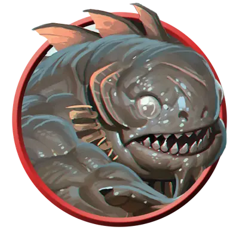

Куо-тоа надзиратель
Kuo-toa Monitor
Средняя Аберрация, Нейтральная Злая

Класс Защиты 13 Инициатива +0 (10)
Хиты 65 (10к8 + 20)
Скорость 30 футов, Плавания 30 футов
| мод | спас | ||
|---|---|---|---|
| СИЛ | 16 | +3 | +3 |
| ЛОВ | 10 | +0 | +0 |
| ТЕЛ | 14 | +2 | +2 |
| мод | спас | ||
|---|---|---|---|
| ИНТ | 12 | +1 | +1 |
| МДР | 14 | +2 | +2 |
| ХАР | 11 | +0 | +0 |
Чувства пассивное Восприятие 16, Истинное зрение 30 футов
Языки Подземный
Опасность 3 (700 опыта; БВ +2)
Особенности
Амфибия. Куо-тоа может дышать как воздухом, так и под водой.
Чувствительность к солнечному свету. Находясь на солнечном свету, Куо-тоа надзиратель совершает с Помехой все проверки характеристик и броски атаки.
Действия
Мультиатака. Куо-тоа совершает две атаки Костяным кнутом.
Костяной кнут. Бросок рукопашной атаки: +5, досягаемость 10 фт. Попадание: 6 (1к6 + 3) Рубящего урона плюс 7 (2к6) урона Электричеством, и цель не может совершать Провоцированные атаки до начала следующего хода куо-тоа.
Бонус мастерства +2
Среда обитания Прибрежье, Подземье
Сокровища Реликварные
Куо-тоа
Рыбоподобные фанатики из глубин
У куо-тоа склизкие гуманоидные тела и головы глубоководных рыб с выпученными глазами. Они утверждают, что когда-то господствовали над целыми мирами и правили империями на суше и на море с благословения своих рыбоподобных богов. Куо-тоа неизвестно, какая катастрофа привела к закату их славную цивилизацию, однако винят они в этом эльфов, людей, свежевателей разума и своих богов. Покинув земли и моря на поверхности, этот народ отступил к пещеристым впадинам и морям Подземья. В этих скрытых царствах куо-тоа размышляют о потерянном и забытом и планируют месть за обиды, которых, возможно, никогда и не было.
Они ненавидят другие цивилизации поверхности и Подземья и считают себя жертвами многовековых унижений и бесконечных заговоров. Чтобы вернуть своё утраченное господство, они плетут хитроумные интриги, часто похищают людей, пытаясь узнать их секреты, и приносят тёмные жертвы причудливым богам. Для этого куо-тоа пытаются схватить существ живыми с помощью сетей или своего чудного оружия. Обитающие в Подземье дроу, дварфы и гномы, а также поселения на поверхности вблизи подземных переходов часто становятся целью для набегов куо-тоа и для воплощения других их планов.
Эти Аберрации часто являются марионетками в руках других порочных кукловодов, таких как аболеты и кракены. Куо-тоа верят, что эти могущественные существа — аватары их божеств, а то сами боги во плоти. Куо-тоа могут вступить во временные союзы с другими злыми существами, однако всё может измениться после очередного знамения их непредсказуемых божеств.
Надзиратели куо-тоа управляют повседневной жизнью своих более слабых соплеменников, направляя их на работы и богослужение. Они также занимаются дрессировкой зверей или чудовищ, служащих куо-тоа, — таких как чуули или гигантские крабы, — и командуют ими в бою. Верховные жрецы наделяют надзирателей способностью повелевать своими подчиненными и усмирять врагов с помощью причудливых хлыстов, бьющих электричеством.
Божества куо-тоа
Куо-тоа всегда ищут способ умилостивить своих непостижимых божеств. Однако лишь немногие из этого народа разделяют общие представления о своих богах: каждое поселение трактует их образ по-своему. Только Морская Мать Блибдульпульп — божество с человеческим телом, но головой и клешнями рака, — пользуется всеобщим поклонением.
Без информации о других богах жрецам куо-тоа приходится выдумывать им новые облики, создавая божественных кумиров из любых подручных предметов. Неважно, черпают ли эти служители силу из веры, заблуждений, потустороннего дара или ещё более странного сверхъестественного источника, — какая-то сила отвечает на их воззвания. Совершите два броска по таблице «Особенность божества куо-тоа» для вдохновения или выберите сами описание бога, которому поклоняются куо-тоа.
Особенность божества куо-тоа
| 1к10 | У божества голова... | У божества тело... |
| 1 | В виде ракушки | Рака-отшельника |
| 2 | В виде клешни краба | Медузы |
| 3 | Миксины | Куо-тоа |
| 4 | Мурены | Рака-богомола |
| 5 | Актинии | Мерфолка |
| 6 | Акулы | Плезиозавра |
| 7 | Луны-рыбы | Морского огурца |
| 8 | В виде щупальца | В виде корабельной кариатиды |
| 9 | В виде сундука с сокровищами | Кальмара |
| 10 | Хаулиода | Кита |
Святилища куо-тоа
Куо-тоа обычно строят свои поселения вокруг мест, которые, как они считают, важны для их божеств. Среди них могут быть постройки и каскады пещер, в большинстве из которых есть и затопленные, и сухие залы. Эти места поклонения могут поведать многое о религиозных ритуалах куо-тоа, пожеланиях их божеств и капризах верховных жрецов, ожидающих знамения. Как и в случае с божествами, святилища куо-тоа могут сильно разниться от поселения к поселению.
Совершите бросок по таблице «Ритуальное место куо-тоа» для вдохновения или выберите сами место для приключений в поселении куо-тоа.
Ритуальное место куо-тоа
| 1к8 | Особенностью поселения куо-тоа является... |
| 1 | Усеянная оружием арена, сделанная из панцирей ракообразных. |
| 2 | Тоннель с впавшими в спячку чуулями. |
| 3 | Сад с мидиями и приливная заводь, обитатели которой шепчут тайные знания. |
| 4 | Скрытое святилище с пёстрым изображением нового божества куо-тоа. |
| 5 | Роскошное жилище животного или чудовища, которое, по слухам, приносит удачу, пророчествует или обладает сокровенным знанием. |
| 6 | Водоём, наполненный медузами, угрями или рыбьей икрой, которые светятся в определённой последовательности. |
| 7 | Камера пыток, внутрь которой падает свет с поверхности. |
| 8 | Высокая статуя божества куо-тоа. |